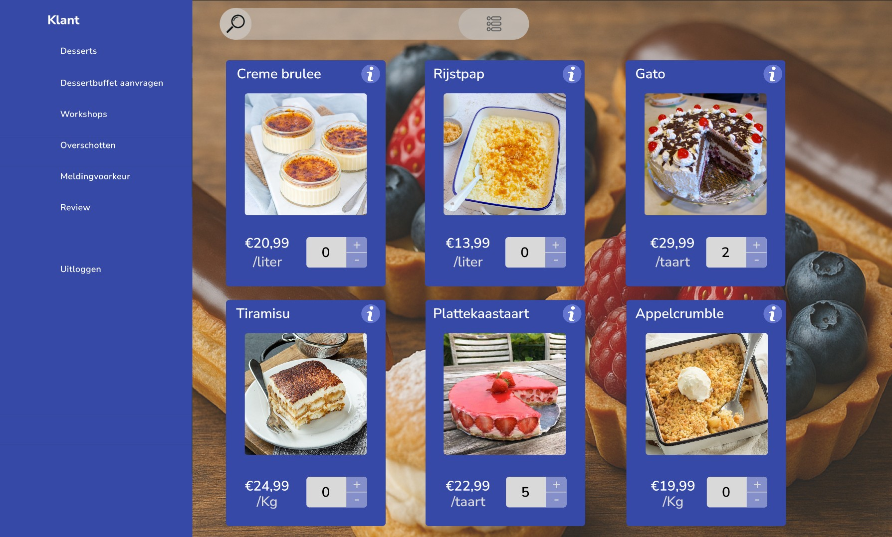
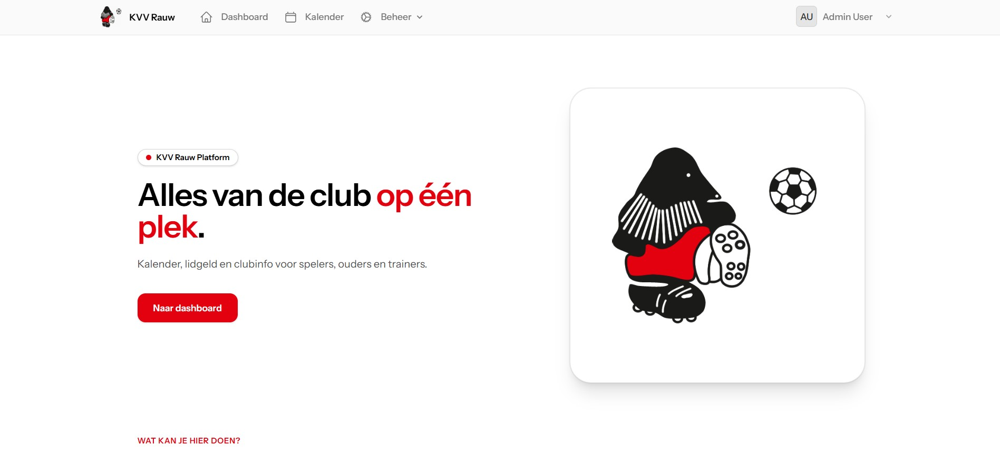
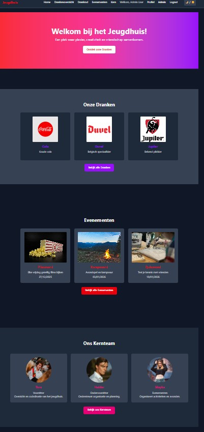
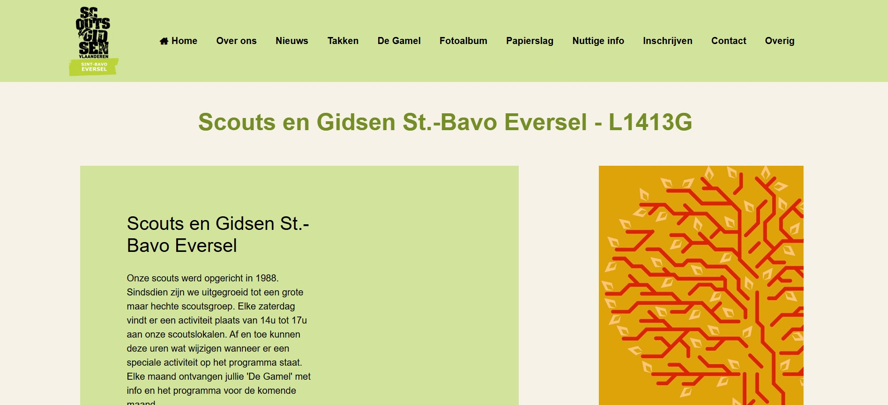

Project 1 - Dessert Ordering Platform (SKIL2)
Context
Developed during SKIL2 in semester 1 in a simulated professional environment where we had to deliver a functional interface for a realistic use case.
Realisation
We built a digital dessert ordering platform with a clear product overview, quantity controls, and order summary components.
My Role
I worked on the frontend structure and styling, and I helped align UI choices with the expected user flow.
What I Learned
I improved my HTML/CSS/JavaScript workflow, component consistency, and collaboration under deadline pressure.
Reflection
This project taught me how to transform a practical requirement into a usable interface while keeping communication and timing on track.

Project 2 - KVV Rauw
Context
Group project for a real client where we had to translate concrete needs into a clear digital platform concept.
Realisation
We worked on a club platform concept to centralize practical information such as events, planning, and communication.
My Role
I contributed to development tasks and coordinated implementation details within the team.
What I Learned
I learned how to handle client-focused feedback, keep work structured, and make decisions that improve usability.
Reflection
Working with a real context improved my professional mindset and showed me the importance of clarity in both code and communication.

Project 3 - Bascule
Context
Website project for Jeugdhuis Bascule to strengthen online visibility and make practical information easier to access.
Realisation
I built the full website structure with clear sections for events, drinks, and general information.
My Role
Full development, including page layout, section hierarchy, and visual consistency.
What I Learned
I learned how to maintain a recognizable visual style while still keeping content readable and easy to navigate.
Reflection
This project taught me to balance design identity and practical usability for a broad target audience.

Project 4 - Scouts
Context
Built together with the scouts leadership team to support communication for members, parents, and volunteers.
Realisation
Created an informational website with practical sections for general info, activities, and contact details.
My Role
I handled frontend implementation and improved the information structure for faster access to key content.
What I Learned
I learned to design for multiple user types and to prioritize content hierarchy over visual complexity.
Reflection
This project confirmed that simple and clear interfaces are often the most effective for real community websites.